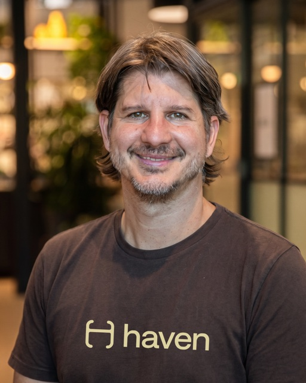
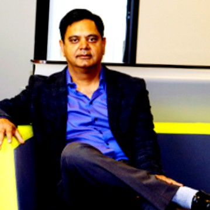
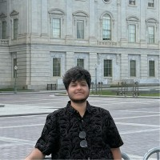
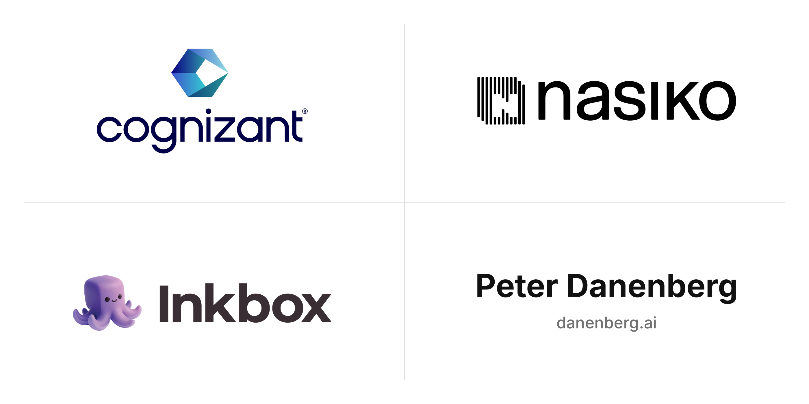

1st IEEE Workshop on Networked AI Agents in a Decentralized Architecture (NANDA)
Building and connecting the emerging Internet of AI agents.
About the Workshop
A new Internet of AI agents is emerging. Frameworks and protocols such as MCP, A2A, and Poppy are enabling agents to access tools, communicate, and collaborate across applications and organizations.
NANDA is enabling this emerging Internet of AI agents at the infrastructure, algorithmic, and behavioral levels. NandaIndex supports discovery across existing systems, while NandaTown provides an environment to deploy and study populations of interacting agents. The workshop brings together researchers and industry practitioners to discuss current systems, demonstrations, and challenges in building networked AI agents.
Workshop schedule
Friday, November 6, 2026. All sessions are in Maple except the keynote (Willow / Oak / Cypress) and lunch (Atrium). Times are Pacific Time (PT).
| Time (PT) | Session and participants |
|---|---|
| 9:20 – 10:20 am | Keynote (9:20–9:50 am): Billions of Personal Agents vs. AGI: Which Future Wins? Ramesh Raskar (MIT Media Lab) 30 minutes Fireside chat (9:50–10:20 am)Ramesh Raskar (MIT) and Peter Danenberg (Google DeepMind) Room: Willow / Oak / Cypress Chair: Danda B. Rawat (Howard University, USA)  Ramesh RaskarMIT Media Lab Peter DanenbergGoogle DeepMind |
| 10:30 – 10:50 am | Panel 1: Interoperability without Uniformity for Locating Agents on the Agentic Web Sam Sharaf (Moderator)Google Cloud John Parello  Pradyumna ChariMIT Media Lab |
| 10:50 – 11:20 am | Panel 2: What Is the Role of Personal Agents in an Agentic Web?  Frank AddanteHello Haven Ray LiaoInkbox Maria Gorskikh (Moderator)Maritime |
| 11:20 – 11:50 am | Panel 3: Can We Build a Safe Sandbox for an Unpredictable Agentic Web? Rahul TodkarNasiko Anirban RoySRI International Pradyumna Chari (Moderator)MIT Media Lab |
| 11:50 am – 12:10 pm | Panel 4: Does the Agentic Web Need a Common Agent Building and Package Format? Babak HodjatCognizant Ramesh Raskar (Moderator)MIT Media Lab |
| 12:10 – 12:30 pm | Panel 5: What Are the Opportunities in a World of Billion Agents? Jukka AlanenRebellion Ventures  Gunjan SinhaOpenGrowth Ventures |
| 12:30 – 1:30 pm | Lunch break Conference lunch (Atrium) |
| 1:30 – 1:54 pm | Research Session 1: Discovery, Delegation & Authorization
|
| 1:54 – 2:18 pm | Research Session 2: Testbeds & Network Dynamics
|
| 2:18 – 2:34 pm | Research Session 3: Containment & Secure Execution
|
| 2:34 – 2:58 pm | Research Session 4: Provenance & Data Integrity
|
| 2:58 – 3:00 pm |
Closing remarks
Pradyumna Chari (MIT Media Lab), Ramesh Raskar (MIT Media Lab)
|
* Tentative; to be finalized.
Demo session
Call for demos
Share a working demonstration of AI agents, agent discovery, multi-agent collaboration, or tools for trust, privacy, and security.
Send the organizers your demo title, team and affiliation, a short description, and a project or video link.
Organizers
Workshop Organizers
Pradyumna Chari
MIT
Ramesh Raskar
MIT Media Lab
Demo Chairs

Ankit Nath
Maria Gorskikh
Online Chairs
Blake Mauri
Vedh Krishnan
Organization Chairs
Sharath Chandra
Doruk Karinca
Sponsors
